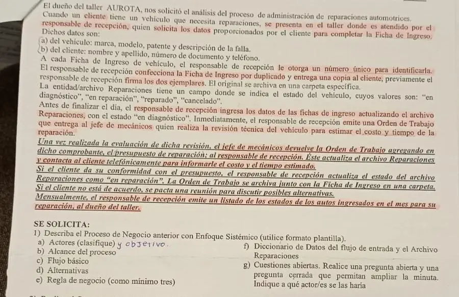

3° parcial, 2024 (taller de reparaciones, incompleto)
3° parcial, 2024
Enunciado


Propuesta de respuesta
Respuesta no verificada. La propuso Luta Studios con inteligencia artificial y ningún docente la revisó. Puede tener errores.
La foto llega solo hasta la consigna 1. Esta propuesta cubre esa consigna.
Ejercicio 1. Proceso de negocio con enfoque sistémico
Proceso de negocio. Administración de reparaciones automotrices.
Objetivo del actor. El cliente quiere que le reparen el vehículo, sabiendo antes cuánto cuesta y cuánto tarda.
Actores.
- Principal. El cliente.
- De apoyo. El responsable de recepción y el jefe de mecánicos.
- Pasivo. El dueño del taller, que recibe el listado mensual.
Alcance del proceso. Desde que el cliente se presenta en el taller con el vehículo hasta que el responsable de recepción emite el listado mensual de estados para el dueño del taller.
Evento externo iniciador. Un cliente con un vehículo que necesita reparaciones se presenta en el taller.
Flujo básico.
- El Cliente se presenta en el taller con el vehículo.
- El Responsable de recepción solicita al Cliente los datos del vehículo y los suyos.
- El Cliente informa la marca, modelo, patente y descripción de la falla, y su nombre y apellido, número de documento y teléfono.
- El Responsable de recepción confecciona la Ficha de Ingreso por duplicado, con un número único, y firma los dos ejemplares.
- El Responsable de recepción entrega la copia al Cliente y archiva el original en una carpeta específica.
- El Responsable de recepción ingresa antes de finalizar el día los datos de las Fichas de Ingreso en el archivo Reparaciones, con el estado «en diagnóstico».
- El Responsable de recepción emite una Orden de Trabajo y se la entrega al Jefe de mecánicos.
- El Jefe de mecánicos realiza la revisión técnica del vehículo para estimar el costo y el tiempo de la reparación.
- El Jefe de mecánicos agrega el presupuesto de reparación en la Orden de Trabajo y se la devuelve al Responsable de recepción.
- El Responsable de recepción actualiza el archivo Reparaciones.
- El Responsable de recepción llama al Cliente para informarle el costo y el tiempo estimado.
- El Cliente da su conformidad con el presupuesto.
- El Responsable de recepción actualiza el estado del vehículo en el archivo Reparaciones como «en reparación».
- El Responsable de recepción archiva la Orden de Trabajo junto con la Ficha de Ingreso en una carpeta.
- El Responsable de recepción emite una vez por mes el listado de estados de los autos ingresados en el mes para el dueño del taller.
Alternativas.
- Paso 12. El Cliente no está de acuerdo con el presupuesto. El Responsable de recepción pacta con él una reunión para discutir posibles alternativas.
Reglas de negocio.
| Regla | Tipo |
|---|---|
| Cada Ficha de Ingreso tiene un número único que la identifica | HE |
| La Ficha de Ingreso se hace por duplicado y el responsable de recepción firma los dos ejemplares antes de entregar la copia | HE |
| Antes de finalizar el día se pasan las Fichas de Ingreso al archivo Reparaciones | AD |
| Todo vehículo entra al archivo Reparaciones con el estado «en diagnóstico» | HE |
| Si el cliente da su conformidad con el presupuesto, el estado pasa a «en reparación» | AD |
| El estado del vehículo es «en diagnóstico», «en reparación», «reparado» o «cancelado» | HE |
Diccionario de datos.
Flujo de datos de entrada
E1 datos-ingreso = datos-vehículo(e) + datos-cliente(e)
Entidad
Reparaciones = nro-ficha + datos-vehículo(e) + datos-cliente(e) + estado(D)
+ (costo-estimado + tiempo-estimado)
Estructuras de datos
datos-vehículo(e) = marca + modelo + patente + descripción-falla
datos-cliente(e) = nombre + apellido + nro-documento + teléfono
Elementos de datos discretos
Atributo: estado (D)
Descripción: Estado del vehículo
Valores posibles: En diagnóstico, en reparación, reparado, canceladoCuestiones abiertas.
- Abierta, al dueño del taller. ¿Qué pasa con la Orden de Trabajo y el vehículo cuando el cliente no acepta el presupuesto y no se llega a un acuerdo en la reunión?
- Cerrada, al responsable de recepción. ¿El estado pasa a «cancelado» cuando el cliente rechaza el presupuesto?
Respuesta no verificada. Puede tener errores.
Se armó con la página del 2° parcial (plantilla de enfoque sistémico, actores, flujo básico con sujeto en cada oración, reglas de negocio con sus tipos, diccionario de datos y cuestiones abiertas, con el ejemplo de la biblioteca).
Quedó en duda: La foto llega solo hasta la consigna 1. La consigna trae agregado a mano «y objetivo» al lado de los actores, y por eso va el objetivo. El costo y el tiempo estimados en la entidad Reparaciones son una deducción, porque la minuta dice que se actualiza el archivo después de la revisión sin decir con qué datos.
¿Cómo te fue?
Marcá cada tema del examen.
- Enfoque sistémicoEl proceso de negocio con enfoque sistémico, en 2° parcial
- Diccionario de datosDiccionario de datos, en 2° parcial